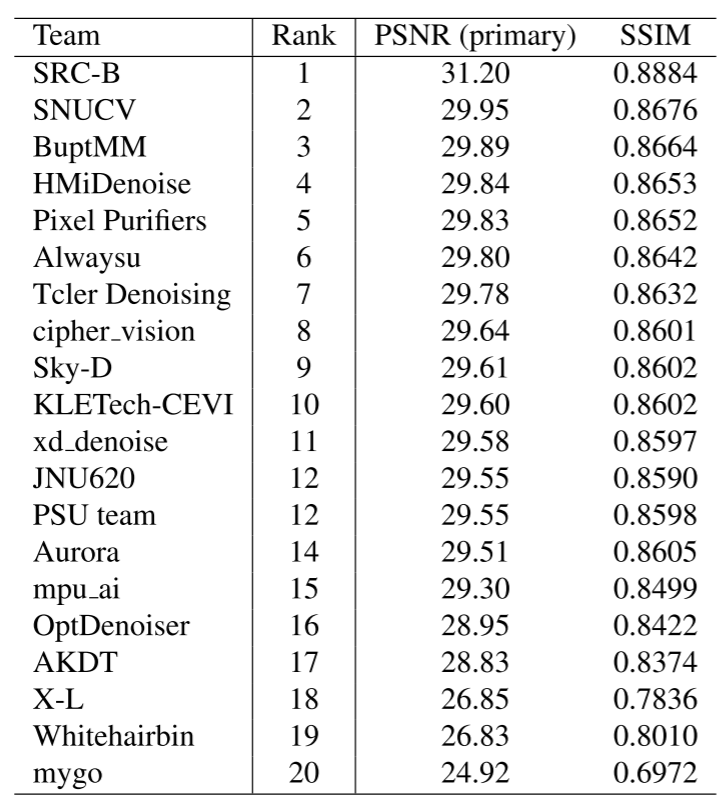
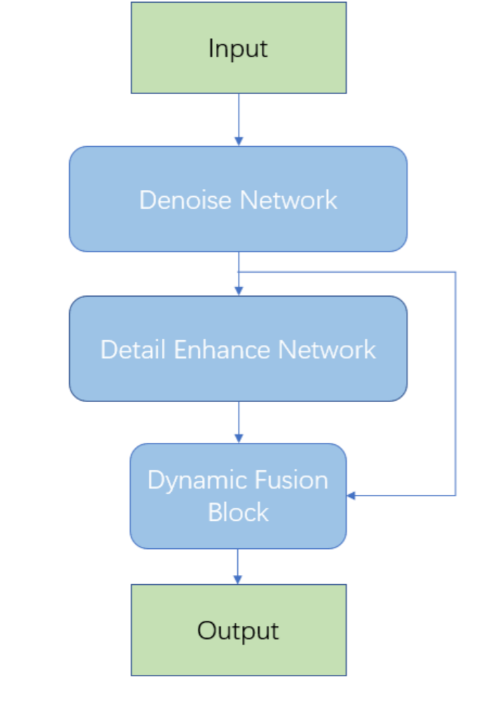
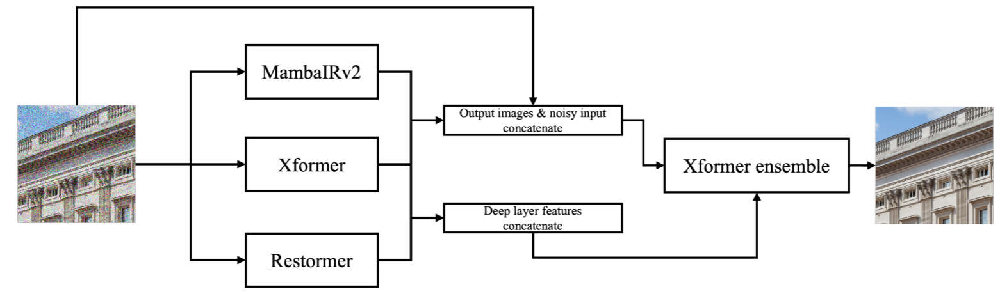
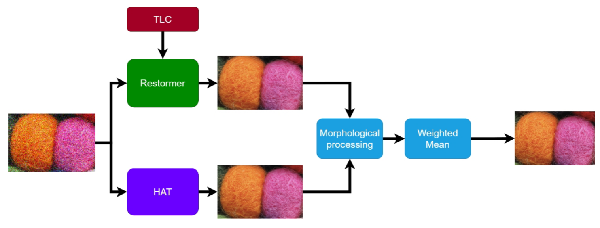
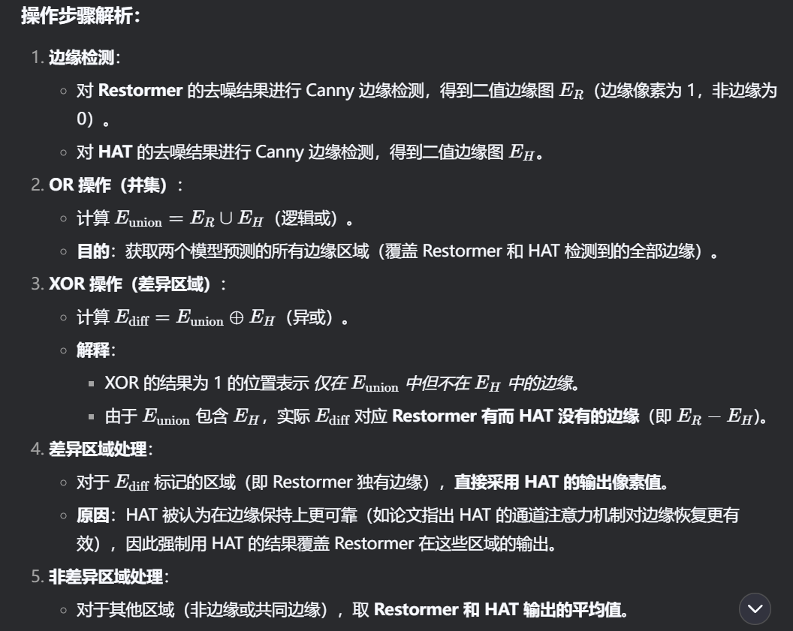
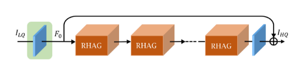
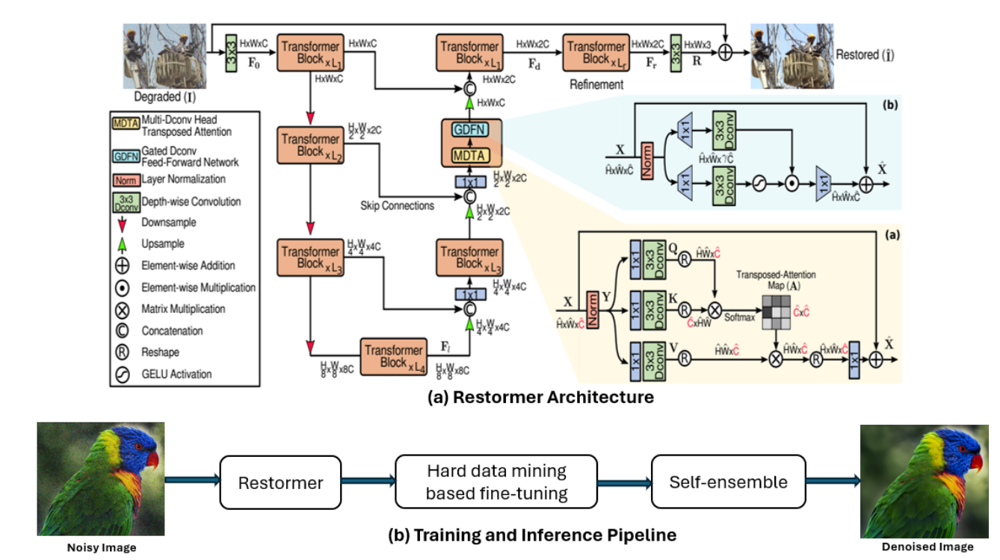
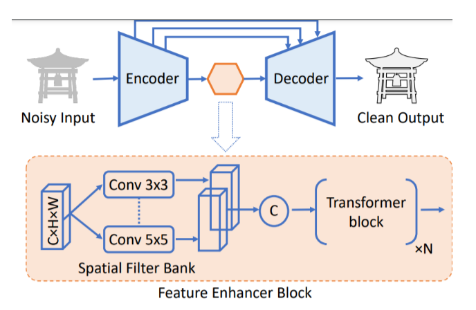

这次的挑战不考虑计算效率和模型复杂度，所以用混合架构以最大化性能需求。
排名情况：

# 第一名：自制 200 万张训练集（ SRC-B ）

- 网络结构如上图所示，先使用基于 Transformer 的
Restormer提取全局信息，然后再使用基于卷积的NAFNet进行局部细节的增强，最后使用特征融合模块整合上述两部分的特征，平衡去噪和细节保留，提升整体性能。 - 用自制 200 万张训练集进行训练整个网络，再使用官方的训练集集微调细节增强网络，最后用官方验证集和自定义训练集中的 1000 张图像继续微调整个网络。
- 对数据进行了一定的筛选，选择拉普拉斯 Var、
BRISQUE和NIQE三个指标排名前 30% 的图像。另外，基于 Clip 特征进行了语义选择，保证数据集反映各种场景的多样性。 - 使用渐进式学习，
patch从 256 到 448 和 768。
# 第二名：混合架构与集成学习的典范（ SNUCV ）

MambaIRv2+Xformer+Restormer混合架构，最后再利用Xformer集成。这三个网络的最深层特征被拼接到一起，然后集成到集成模型的最深层特征中，这种做法有点类似于残差学习，确保前面网络的特征能够有效、无损失地保留到后面的集成模型中。- 依然是渐进式训练，patch 大小逐渐增加为 [128, 160, 192, 256, 320, 384]，对应的 batch 大小为 [8, 5, 4, 2, 1, 1]。训练是先训练前面三个网络，然后再单独训练后面的集成模型，如果前面三个网络没有训练好，后面的集成模型训练是没有意义的。
- 前面的去噪模型使用
L1损失训练，后面的集成模型使用L1、MSE和高频损失组合训练。
# 第三名：边缘特征学习（ BuptMM ）

这个模型在推理的时候用 TLC 技术增强
Restormer的推理性能。这是一种通过去除纹理中的退化表征来提升图像恢复效果的一种技术。分别训练
Restormer和 HAT，而且分别都用渐进式的训练方法。HAT 是一个通过激活像素的方式提升 Transformer 在图像恢复上性能的方法。对
Restormer和 HAT 的输出结果用 Canny 算子处理为边缘纹理二值图，然后进行 OR 和 XOR 操作，边缘像素点统一使用 HAT 的输出，而其他非边缘位置像素点，取两个模型输出的均值。可能是考虑到Restormer的全局注意力可能会过度平滑细节，导致边缘模糊。具体的步骤可以参考Deepseek的分析：
# 第四名：直筒型依然有效（ HMiDenoise ）

- 依然有渐进式训练，随着 patch size 增大，batch size 减小。
RHAG是基于 HAT 的改进版本，也是类似于 Transformer 的架构。可见直筒型在图像恢复的重要性依然很明显。
# 第五名：纯 Restormer + 数据增强（Pixel Purifiers）

- 模型架构是原封不动的 Restormer。
- 使用硬数据挖掘技术提升 PSNR。目前我的理解是在训练集中挑出训练损失较高的 patch，统一放到最后训练完后的进一步微调，做迁移学习，提升泛化性。
- 推理采用分块推理，将大尺寸图像分割为与训练相同尺寸的小块（patch），逐块输入模型。因为块和块之间的边界拼接容易带来伪影，所以相邻的块设置重叠区域，重叠宽度大，图像质量高，但速度慢。最终拼接时对重叠区域的像素进行加权平均。
- 在推理时使用自集成技术提升推理性能。
# 第六名：纯 Restormer + 迁移学习 ( Alwaysu )
- 架构采用原封不动的 Restormer。
- 预训练的 Restormer 并未对噪声图像进行强度裁剪，因此性能较差。如果要对比赛的数据集采用强度裁剪，同时又要使用冻结的 Restormer，那么就要解决数据分布不匹配的问题，需要 Restormer 适应新的经过强度裁剪的数据。
- 为什么直接让预训练的 Restormer 在新的数据上微调、更新不合适？因为这需要更新所有的参数，计算成本高，而且容易破坏预训练的知识。
- 冻结主体的 Restormer 权重，然后在现有网络的层添加偏置参数，作为一种分布适配器，也相当于为原网络增加自适应校准层，将预训练知识适配新的噪声分布。
- 在推理依然采用分块推理、小重叠、自集成技术。
# 第七名：xxIR+xxIR=xxxxIR（ Tcler Denosing ）
- 模型结构采用 PromptIR+MambaIRv2 的方案，最后融合两个模型的恢复结果。这个好像有点类似于集成学习。
- 训练策略依然采用渐进式的训练，使用的损失函数不是一般的 L1 损失，是两个改进的 L1 损失：Charbonnier loss 和 Gradient-weighted L1 loss。
- 使用了 USM sharpen 这个数据增强方法。
- 推理采用了自集成策略。
- 貌似 MambaIRv2 解决了 MambaIR 的因果长局建模问题。
# 第八名：（ cipher vision ）
